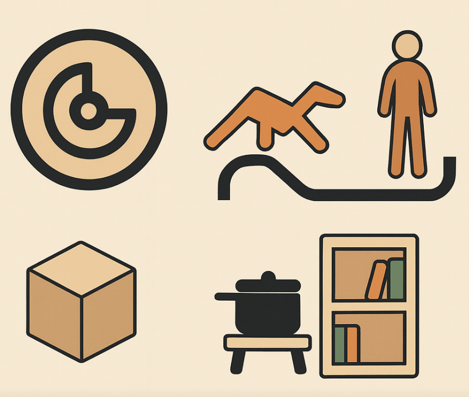
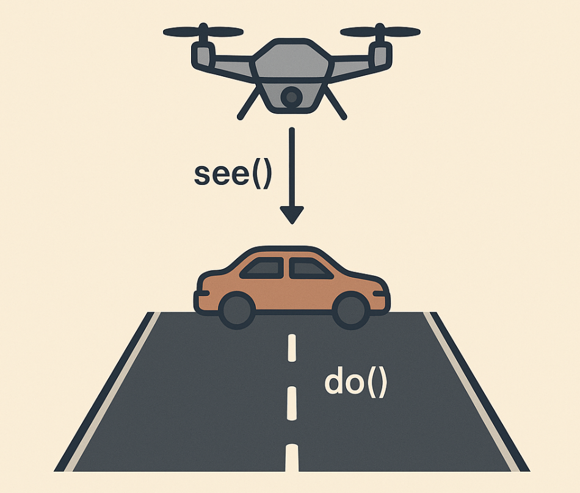
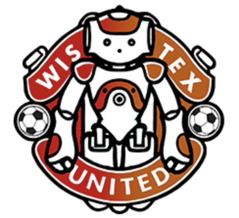
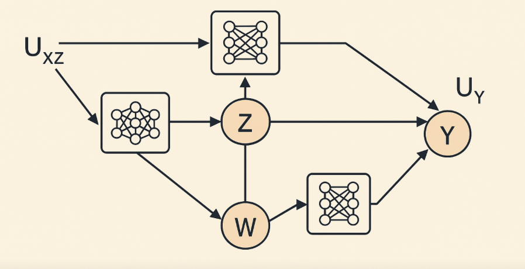
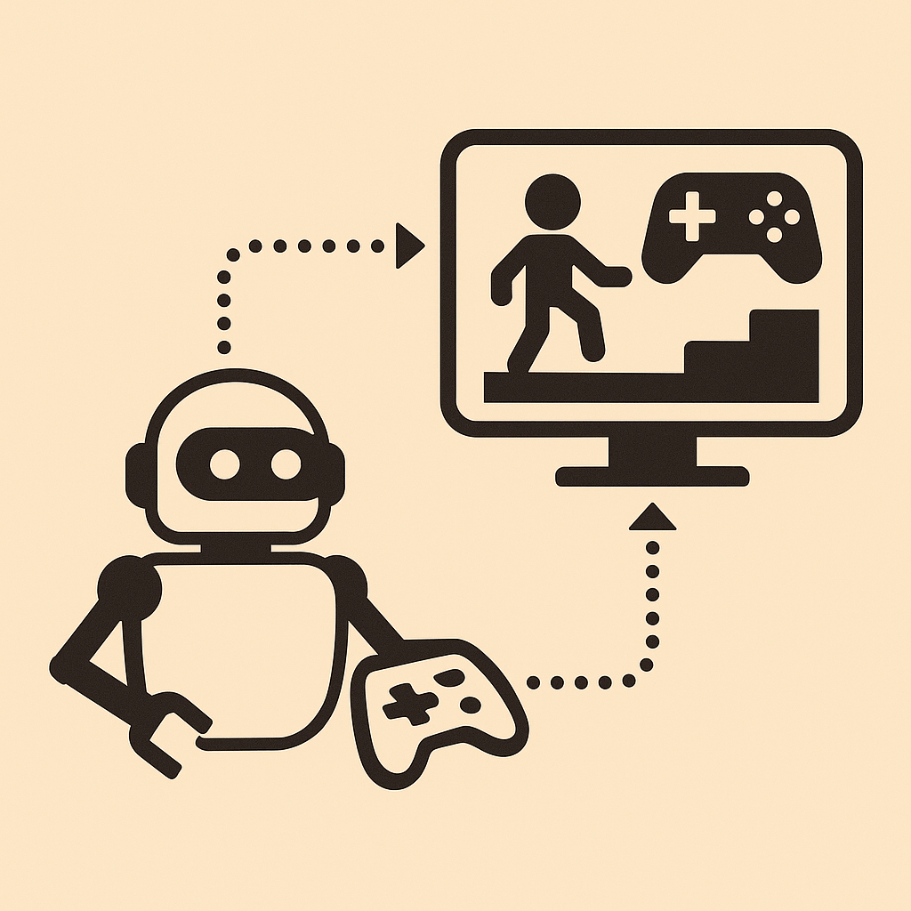

Eylam Tagor
M.S. Computer Science • Columbia University • New York, NY
Bio
I am an M.S. student in Computer Science at Columbia University, advised by Prof. Elias Bareinboim. My research focuses on reinforcement learning and causal inference, particularly in building reliable decision-making systems that can handle uncertainty, partial observability, and real-world imperfections.
Before Columbia, I completed my undergraduate degree at UT Austin, where I worked with Prof. Peter Stone on multi-agent RL and sim2real as part of the RoboCup team.
I am currently applying for Ph.D. programs for Fall 2026, and seeking research internships from now until Fall 2026.
Research

CILBench: Benchmarking Robust Imitation Learning in Confounded High-Dimensional Control Environments: A benchmark and methodology for causal imitation learning in high-dimensional, long-horizon tasks.
Under Submission · PDF
Under Submission · PDF

Gymnasium for Causal Imitation Learning: Developed imitation learning algorithms grounded in causal inference; built SCM-parameterized RL environments supporting observational, interventional, and counterfactual evaluation.
Tech Report
Tech Report

Multi-Agent RL for RoboCup @ LARG: Implemented multi-agent deep RL behaviors for NAO robot soccer; improved sim2real transfer using high-fidelity simulation, contributing to a first-place finish in the 2024 RoboCup SPL Challenge Division.
Code
Code

Residual Neural Causal Model: Designed ResNCM, a neural causal model using PyTorch and Causal-Learn; conducted counterfactual analyses on education datasets, outperforming classical and deep-learning baselines.
Tech Report · Code
Tech Report · Code

Generalist Embodied Video Game Agent @ NVIDIA: Built embodied agents and multimodal training environments using OpenAI Gym; integrated RL algorithms, LLMs, and large-scale pretraining to improve cross-task generalization.
Code
Code
Teaching
- ORCS 4529: Reinforcement Learning (Fall 2025)
- COMS 4995: Causal Inference for Data Science (Spring 2025)